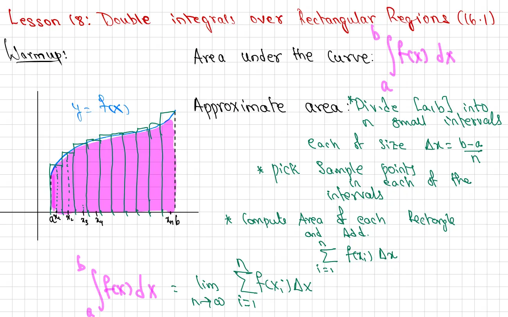
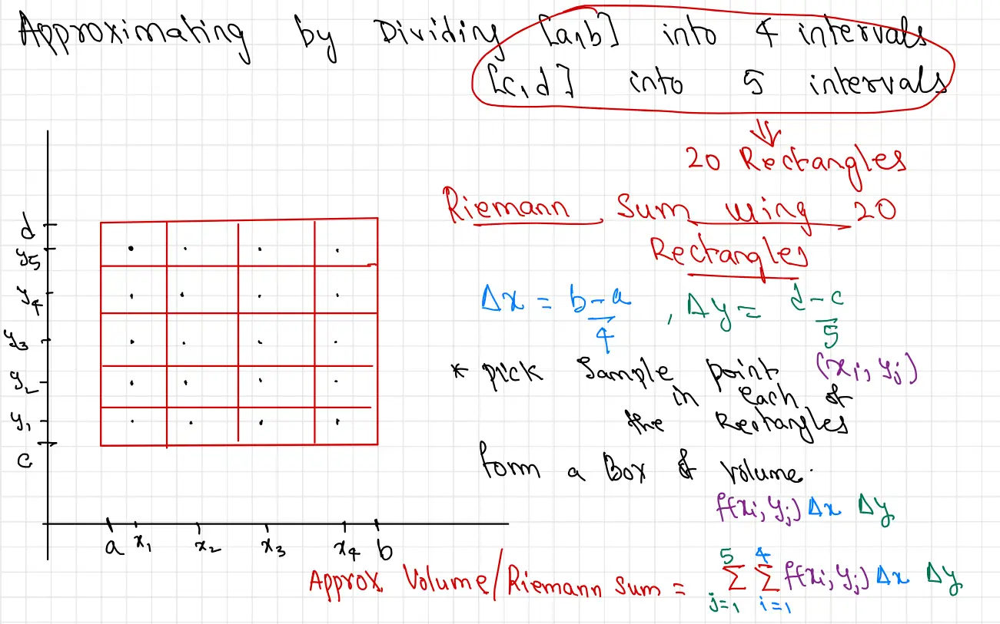
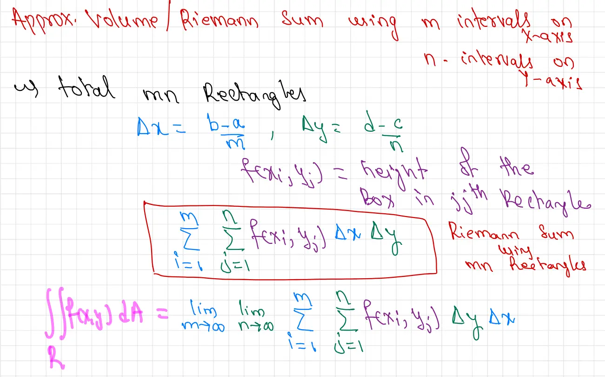
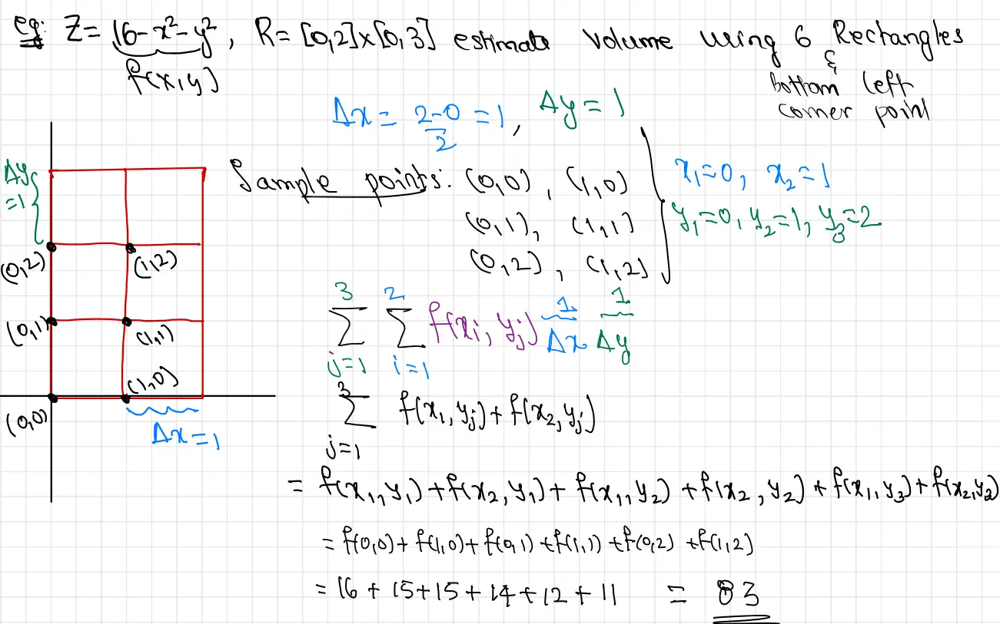
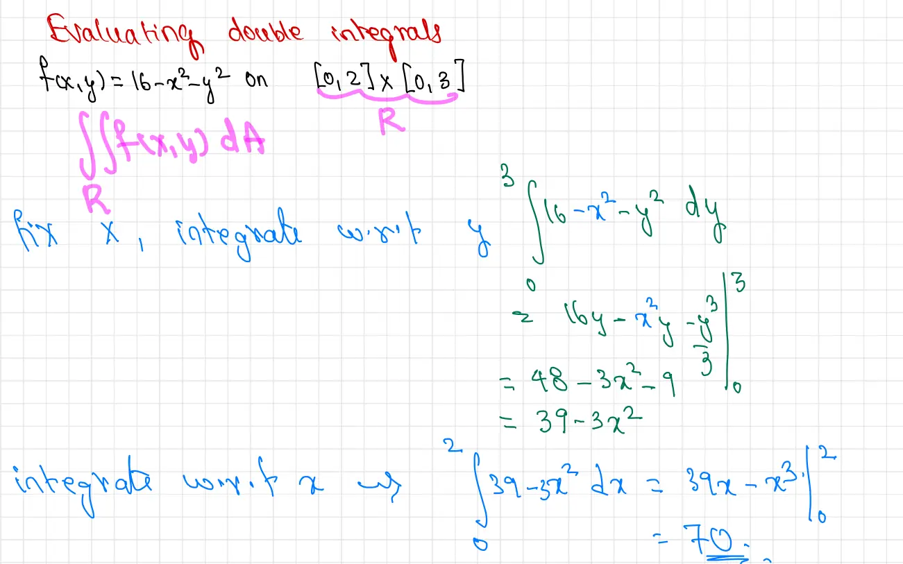
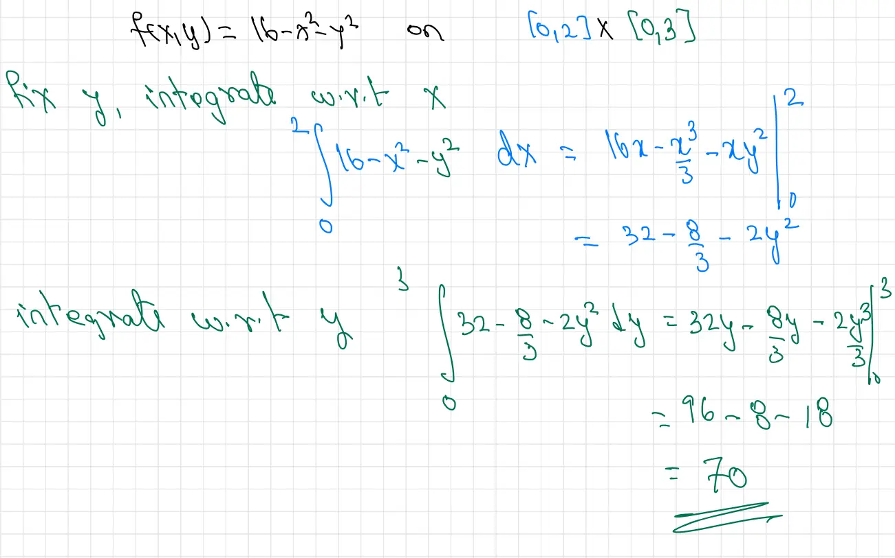
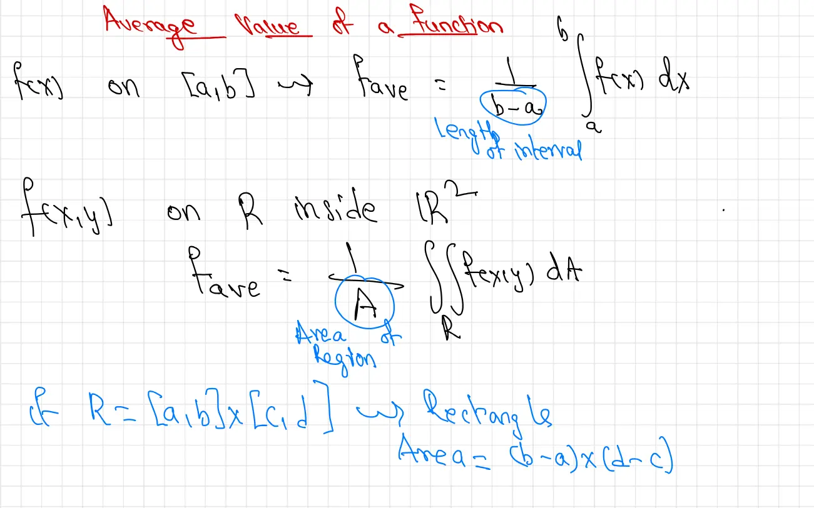
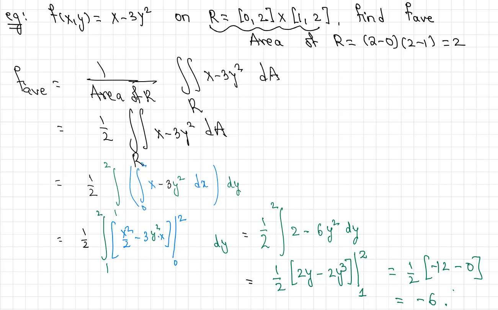

Prof. Mahesh Sunkula's notes, copied 2026-11-09 from the original page. All content belongs to its author.
Page 1

Original handwritten page 1
Lesson 18: Double Integrals over Rectangular Regions (Section 16.1)
Warmup
The concept of a single integral is based on finding the area under a curve. For a continuous function \(y = f(x)\), the area under the curve between \(x = a\) and \(x = b\) is expressed as:
\[\int_{a}^{b} f(x) \, dx\]
Visual Description: A graph depicts a coordinate system with a function \(y = f(x)\) plotted in blue. The area under this curve from \(x = a\) to \(x = b\) is shaded in pink. To demonstrate the Riemann sum approximation, the total interval \([a, b]\) is divided into multiple sub-intervals along the x-axis, labeled \(a, x_1, x_2, x_3, x_4, \dots, x_n, b\). Vertical rectangles are drawn over these intervals with heights determined by the function's value, approximating the total shaded area.
Process: To approximate the area under the curve, we follow these systematic steps:
Divide the interval \([a, b]\) into \(n\) small sub-intervals, each with a uniform width of \(\Delta x = \frac{b-a}{n}\).
Pick sample points within each of the sub-intervals.
Compute the area of each resulting rectangle (height times width) and add them together.
The sum of the areas of these \(n\) rectangles is represented by the summation:
\[\sum_{i=1}^{n} f(x_i) \Delta x\]
By taking the limit as the number of sub-intervals \(n\) approaches infinity, we arrive at the formal definition of the definite integral:
Definition: Consider a surface defined by the function \(z = f(x, y)\) over a closed rectangular region \(R\) in the \(xy\)-plane. This region is mathematically expressed as:
\[R = [a, b] \times [c, d] = \{(x, y) \in \mathbb{R}^2 \mid a \leq x \leq b, c \leq y \leq d\}\]
Visual Description: The diagram displays a three-dimensional coordinate system with \(x\), \(y\), and \(z\) axes. A pink-shaded surface \(z = f(x, y)\) is plotted above the \(xy\)-plane. On the plane, the rectangular region \(R\) is bounded by \(x = a\), \(x = b\), \(y = c\), and \(y = d\). The region \(R\) is partitioned into a grid of smaller sub-rectangles. A representative sub-rectangle is highlighted, from which a vertical rectangular prism (a "box") extends upward to meet the surface, illustrating the geometry used to approximate the volume.
Theorem: The volume under the surface \(z = f(x, y)\) and above the rectangular region \(R\) is given by the double integral of the function over that region:
\[\text{Volume} = \iint_R f(x, y) \, dA\]
Riemann Sum Approximation
To find the approximate volume under the surface, we employ a Riemann sum. This method involves the following systematic steps:
First, divide the interval \([a, b]\) on the \(x\)-axis and the interval \([c, d]\) on the \(y\)-axis into smaller sub-intervals. This process partitions the region \(R\) into a grid of small rectangles.
Next, select a sample point within each of these small rectangles. From each rectangle, form a vertical box whose height is determined by the value of the function \(f(x, y)\) at that specific sample point.
Finally, compute the volume of each individual box and add them all together. The resulting sum provides an approximation of the total volume under the surface, which converges to the exact volume as the grid is refined.
Page 3

Original handwritten page 3
Approximating Volume with Riemann Sums
To approximate the volume of a solid under a surface over a rectangular region, we begin by partitioning the domain into smaller sub-rectangles. In this instance, we are approximating by dividing the interval \([a, b]\) along the x-axis into 4 sub-intervals and the interval \([c, d]\) along the y-axis into 5 sub-intervals.
The diagram illustrates a rectangular region in the xy-plane defined by the intervals \([a, b]\) on the x-axis and \([c, d]\) on the y-axis. The x-axis is partitioned into four sub-intervals by marks at \(a, x_1, x_2, x_3, x_4,\) and \(b\). The y-axis is partitioned into five sub-intervals by marks at \(c, y_1, y_2, y_3, y_4, y_5,\) and \(d\). This grid creates a total of 20 identical rectangles (4 columns and 5 rows). Inside each rectangle, a single black dot is placed to represent a chosen sample point \((x_i, y_j)\).
Note: Dividing the rectangular domain into 4 horizontal and 5 vertical intervals results in a total of 20 sub-rectangles used for the approximation.
Definition: The width (\(\Delta x\)) and height (\(\Delta y\)) of each sub-rectangle are calculated as:
\[\Delta x = \frac{b - a}{4}\]
\[\Delta y = \frac{d - c}{5}\]
Process:
To compute the total volume approximation, we pick a sample point \((x_i, y_j)\) within each of the 20 rectangles. For each rectangle, we form a three-dimensional box where the height is determined by the function value at that sample point. The volume of a single box is:
\[f(x_i, y_j) \Delta x \Delta y\]
Riemann Sum: The approximate volume of the solid is the sum of the volumes of all 20 boxes, expressed as a double summation:
\[\text{Approx. Volume / Riemann Sum} = \sum_{j=1}^{5} \sum_{i=1}^{4} f(x_i, y_j) \Delta x \Delta y\]
Page 4

Original handwritten page 4
Approximate Volume and Riemann Sums
To approximate the volume under a surface, we partition the region into a grid using \(m\) intervals on the x-axis and \(n\) intervals on the y-axis. This process results in a total of \(mn\) rectangles within the region.
Definition: The dimensions of the sub-intervals are determined by:
\[ \Delta x = \frac{b - a}{m} \quad \text{and} \quad \Delta y = \frac{d - c}{n} \]
In this context, the functional value \(f(x_i, y_j)\) represents the height of the box in the \(ij\)-th rectangle.
Riemann Sum: The Riemann sum used to approximate volume with \(mn\) rectangles is expressed as:
\[ \sum_{i=1}^{m} \sum_{j=1}^{n} f(x_i, y_j) \Delta x \Delta y \]
Definition of the Double Integral: The exact volume under the surface \(f(x, y)\) over a region \(R\) is defined as the limit of the Riemann sum as the number of subdivisions approaches infinity:
\[ \iint_R f(x, y) \, dA = \lim_{m \to \infty} \lim_{n \to \infty} \sum_{i=1}^{m} \sum_{j=1}^{n} f(x_i, y_j) \Delta y \Delta x \]
Page 5

Original handwritten page 5
Estimating Volume with Riemann Sums
Example: Given the function \( z = f(x, y) = 16 - x^2 - y^2 \) over the rectangular region \( R = [0, 2] \times [0, 3] \), estimate the volume under the surface using 6 sub-rectangles. For this estimation, use the bottom-left corner point of each sub-rectangle as the sample point.
Visual Description: The diagram illustrates a grid on the xy-plane representing the region \( R \). The x-axis ranges from 0 to 2, and the y-axis ranges from 0 to 3. The region is divided into a 2-by-3 grid of 6 equal sub-rectangles. Vertical lines are drawn at \( x = 0, 1, \) and \( 2 \), and horizontal lines are drawn at \( y = 0, 1, 2, \) and \( 3 \). Points are marked at the bottom-left corner of each of the six cells: (0,0), (1,0), (0,1), (1,1), (0,2), and (1,2). Labels indicate that the width of each sub-rectangle is \( \Delta x = 1 \) and the height is \( \Delta y = 1 \).
Solution:
To estimate the volume using a Riemann sum, we first determine the dimensions of each sub-rectangle and identify the appropriate sample points.
The width of each sub-rectangle along the x-axis is calculated as:
\[ \Delta x = \frac{2 - 0}{2} = 1 \]
The height of each sub-rectangle along the y-axis is:
\[ \Delta y = \frac{3 - 0}{3} = 1 \]
The area of each sub-rectangle is \( \Delta A = \Delta x \Delta y = 1 \times 1 = 1 \).
Using the bottom-left corner points, our sample points \( (x_i, y_j) \) are:
\( (0,0), (1,0), (0,1), (1,1), (0,2), \) and \( (1,2) \).
The volume \( V \) is approximated by the double sum:
\[ V \approx \sum_{j=1}^{3} \sum_{i=1}^{2} f(x_i, y_j) \Delta x \Delta y \]
Expanding the summation and substituting \( \Delta x \Delta y = 1 \):
\[ V \approx \sum_{j=1}^{3} [f(x_1, y_j) + f(x_2, y_j)] \]
\[ V \approx f(0,0) + f(1,0) + f(0,1) + f(1,1) + f(0,2) + f(1,2) \]
Evaluating the function \( f(x, y) = 16 - x^2 - y^2 \) at each sample point:
\( f(0,0) = 16 - 0^2 - 0^2 = 16 \)
\( f(1,0) = 16 - 1^2 - 0^2 = 15 \)
\( f(0,1) = 16 - 0^2 - 1^2 = 15 \)
\( f(1,1) = 16 - 1^2 - 1^2 = 14 \)
\( f(0,2) = 16 - 0^2 - 2^2 = 12 \)
\( f(1,2) = 16 - 1^2 - 2^2 = 11 \)
Summing these values provides the final volume estimate:
\[ V \approx 16 + 15 + 15 + 14 + 12 + 11 = 83 \]
Note: Choosing different sample points (such as midpoints or upper-right corners) would result in a different numerical approximation of the volume.
Page 6

Original handwritten page 6
Evaluating Double Integrals
Example: Evaluate the double integral of the function \(f(x, y) = 16 - x^2 - y^2\) over the rectangular region \(R = [0, 2] \times [0, 3]\). This is expressed as:
\[\iint_R f(x, y) \, dA\]
Solution: To solve this iterated integral, we process the variables one at a time. We begin by fixing \(x\) and integrating the function with respect to \(y\) over the bounds defined for the region \(R\), which are \(0\) to \(3\).
\[\int_0^3 (16 - x^2 - y^2) \, dy\]
Integrating with respect to \(y\) while treating \(x\) as a constant, we obtain:
Having reduced the inner integral to a function of \(x\), we now integrate this result with respect to \(x\) over the interval \([0, 2]\):
\[\int_0^2 (39 - 3x^2) \, dx\]
Performing the integration with respect to \(x\):
\[= \left[ 39x - x^3 \right]_0^2\]
Substituting the bounds for \(x\):
\[= (39(2) - 2^3) - (0)\]
\[= 78 - 8\]
\[= 70\]
The value of the double integral over the specified region is 70.
Page 7

Original handwritten page 7
Iterated Integrals over Rectangular Regions
Example: Evaluate the double integral of the function \(f(x, y) = 16 - x^2 - y^2\) over the rectangular region defined by the Cartesian product \([0, 2] \times [0, 3]\).
To evaluate the integral over the specified region, we use the method of iterated integration. We first fix \(y\) and integrate the function with respect to \(x\) over the interval \([0, 2]\):
Theorem: If \(f(x,y)\) is continuous on the rectangular region \(R = [a,b] \times [c,d]\), then the double integral of the function over that region can be expressed as an iterated integral:
Furthermore, the order of integration does not affect the final value, allowing the integral to be calculated as:
\[\iint_R f(x,y) \, dA = \int_a^b \int_c^d f(x,y) \, dy \, dx\]
Page 9

Original handwritten page 9
Average Value of a Function
Definition: For a single-variable function \(f(x)\) defined on a closed interval \([a,b]\), the average value of the function, denoted as \(f_{ave}\), is calculated by dividing the definite integral of the function by the length of the interval:
In this formula, the denominator \(b - a\) represents the length of the interval.
Definition: For a function of two variables \(f(x,y)\) defined over a region \(R\) in the Cartesian plane \(\mathbb{R}^2\), the average value \(f_{ave}\) is the double integral of the function over region \(R\) divided by the total area of the region:
\[f_{ave} = \frac{1}{A} \iint_{R} f(x,y) \, dA\]
In this context, \(A\) represents the area of the region \(R\).
If the region \(R\) is a rectangle defined by the Cartesian product of two intervals, \(R = [a,b] \times [c,d]\), then the area \(A\) of the rectangle is simply the product of the lengths of its sides:
\[\text{Area} = (b - a) \times (d - c)\]
Page 10

Original handwritten page 10
Average Value of a Function of Two Variables
Example: Given the function \(f(x, y) = x - 3y^2\) defined on the rectangular region \(R = [0, 2] \times [1, 2]\), find the average value \(f_{\text{ave}}\).
Solution:
To find the average value of a function over a region \(R\), we apply the following formula:
First, we calculate the area of the rectangular region \(R\). Based on the provided bounds \(0 \leq x \leq 2\) and \(1 \leq y \leq 2\), the area is determined by:
\[\text{Area of } R = (2 - 0)(2 - 1) = 2 \times 1 = 2\]
We then substitute the area and the function into the average value formula. We set this up as an iterated integral, choosing to integrate with respect to \(x\) first and then with respect to \(y\):